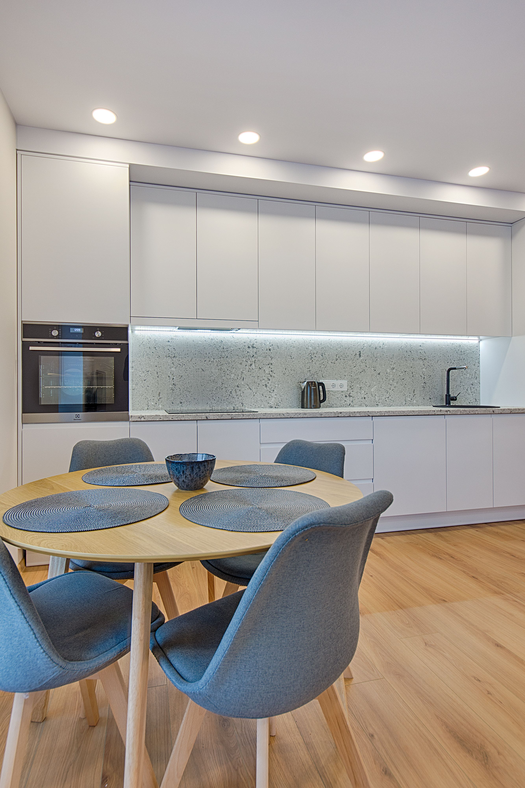
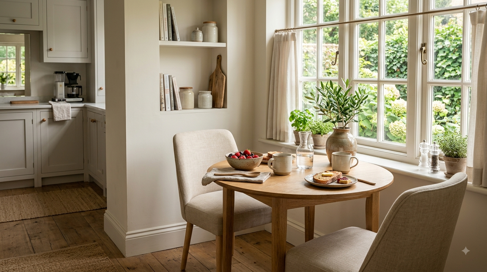

En este artículo
Introducción
Aprende a reducir el ruido en casa identificando su origen y utilizando textiles, muebles, sellados y soluciones adecuadas para cada habitación.
Antes de empezar, conviene observar las condiciones reales de la vivienda y definir qué problema quieres resolver. Las soluciones más efectivas suelen combinar planificación, mantenimiento y decisiones proporcionadas, en lugar de depender de un único truco.
En esta guía encontrarás un método práctico para avanzar paso a paso, con criterios que puedes adaptar al tamaño de tu casa, presupuesto y rutina. La prioridad es mejorar el espacio sin crear nuevos problemas de seguridad, limpieza o mantenimiento.
Haz cambios graduales y evalúa el resultado. Cuando una intervención implica instalaciones, estructuras o trabajos especializados, consulta a un profesional cualificado antes de modificar elementos que puedan afectar la vivienda.
Identificar de dónde viene el ruido antes de actuar
Reducir el ruido comienza por identificar su origen. No se trata igual una conversación que atraviesa una pared, el tráfico que entra por una ventana, pasos del piso superior o vibraciones de un electrodoméstico. Dedica varios momentos del día a escuchar y anota dónde el sonido parece más intenso. Esta observación evita gastar dinero en soluciones que no atacan el problema principal.
El ruido aéreo se transmite por el aire e incluye voces, televisión, música y tráfico. El ruido de impacto se produce cuando una fuerza golpea una estructura, como pasos, muebles arrastrados o objetos que caen. También existe ruido generado por vibraciones de equipos. Cada tipo requiere estrategias diferentes y, en problemas importantes, puede ser necesario un diagnóstico acústico profesional.
Revisa puertas y ventanas. Pequeñas holguras permiten pasar sonido además de aire. Burletes adecuados pueden mejorar el sellado, siempre que no bloqueen ventilaciones necesarias. En ventanas antiguas, el vidrio, el marco y la instalación influyen conjuntamente; cambiar solo un componente no siempre ofrece la mejora esperada.
Observa también paredes compartidas. Enchufes, cajas, conductos y encuentros mal sellados pueden convertirse en puntos débiles. No tapes instalaciones sin conocer su función ni utilices materiales inflamables o incompatibles. Si el ruido es intenso, consulta a un especialista antes de abrir paredes.
Los sonidos interiores también cuentan. Superficies duras como vidrio, baldosa y paredes desnudas reflejan el sonido y aumentan reverberación. Una habitación puede parecer ruidosa aunque el volumen de la fuente no sea alto. En ese caso, incorporar materiales absorbentes puede mejorar el confort.
Antes de hacer una reforma, establece un objetivo realista. Reducir ligeramente la reverberación es sencillo; aislar una habitación para música o bloquear tráfico intenso puede requerir sistemas constructivos específicos. Diferenciar acondicionamiento acústico de aislamiento evita expectativas incorrectas.

Consejo práctico
Observa el resultado durante varios días antes de realizar nuevos cambios. Ajustar una decisión cada vez permite identificar qué funciona realmente en tu espacio y evita gastos o intervenciones innecesarias.
Utilizar textiles y muebles para controlar la reverberación
Alfombras, cortinas, tapizados y otros materiales blandos absorben parte de las reflexiones sonoras. En un salón con suelo duro y pocas superficies textiles, una alfombra amplia puede reducir eco y hacer que conversaciones y televisión resulten más agradables. Utiliza una base antideslizante adecuada para evitar accidentes.
Las cortinas gruesas pueden reducir reflexiones cerca de ventanas y aportar una pequeña mejora frente al ruido exterior, pero no sustituyen una ventana bien sellada. Si el problema principal es tráfico intenso, conviene revisar primero marcos, juntas y tipo de acristalamiento.
Los muebles también modifican la acústica. Una librería llena colocada contra una pared compartida añade masa y rompe reflexiones, aunque no debe presentarse como una solución de aislamiento profesional. Sofás, sillones y cabeceros tapizados contribuyen a que una habitación vacía deje de sonar tan reverberante.
Evita cubrir todas las superficies con materiales absorbentes sin criterio. Una habitación excesivamente amortiguada puede sentirse poco natural. El objetivo doméstico suele ser equilibrar superficies duras y blandas, manteniendo comodidad, limpieza y estética.
En dormitorios, una alfombra junto a la cama, cortinas adecuadas y un cabecero tapizado pueden suavizar el ambiente. En habitaciones infantiles, textiles lavables ayudan, pero deben cumplir requisitos de seguridad y no bloquear radiadores, enchufes ni salidas.
Los paneles acústicos decorativos pueden ser útiles para reducir reverberación cuando están diseñados para ese propósito. Comprueba sus especificaciones y utiliza sistemas de fijación seguros. Espumas decorativas muy finas pueden cambiar el eco, pero no ofrecen necesariamente aislamiento frente a vecinos.
Consejo práctico
Observa el resultado durante varios días antes de realizar nuevos cambios. Ajustar una decisión cada vez permite identificar qué funciona realmente en tu espacio y evita gastos o intervenciones innecesarias.
Aplicar soluciones según cada habitación y tipo de ruido
En el dormitorio, prioriza las fuentes que interfieren con el sueño. Si el ruido entra por la ventana, mejora sellados y considera soluciones de acristalamiento apropiadas. Si llega por una puerta interior, un burlete inferior y una hoja más sólida pueden ayudar, siempre respetando ventilación y seguridad.
En el salón, separa altavoces y televisores de paredes compartidas cuando sea posible. Utiliza soportes estables y evita apoyar equipos que vibran directamente sobre superficies ligeras. Bases antivibración específicas pueden reducir transmisión en determinados aparatos.

En cocinas y lavaderos, comprueba que lavadoras, secadoras y frigoríficos estén nivelados. Una máquina desequilibrada genera vibraciones innecesarias. Revisa patas, instalación y objetos sueltos. Si aparece un ruido nuevo o mecánico, consulta el manual o servicio técnico en lugar de intentar amortiguarlo externamente.
En oficinas domésticas, el objetivo puede ser mejorar claridad durante llamadas. Cortinas, alfombra, estanterías y paneles absorbentes reducen reverberación. Colocar el escritorio lejos de una pared que transmite conversaciones también puede ayudar.
Para ruido de impacto procedente de otro piso, las soluciones dentro de tu vivienda pueden tener eficacia limitada. Los sistemas más efectivos suelen actuar en el suelo donde se genera el impacto o mediante techos desacoplados diseñados profesionalmente. Hablar con vecinos o administración puede ser parte de la solución.
Si vas a realizar una reforma acústica, pide que se especifiquen materiales, espesores, sellados y encuentros. El aislamiento depende del sistema completo; pequeñas discontinuidades pueden reducir mucho el rendimiento. Una propuesta profesional debe explicar qué tipo de ruido intenta controlar y qué mejora es razonable esperar.
Consejo práctico
Observa el resultado durante varios días antes de realizar nuevos cambios. Ajustar una decisión cada vez permite identificar qué funciona realmente en tu espacio y evita gastos o intervenciones innecesarias.
Las puertas interiores huecas suelen dejar pasar más sonido que hojas sólidas. Si la privacidad acústica es importante, una puerta con mayor masa y un marco bien sellado puede mejorar el resultado. Sin embargo, recuerda que algunas habitaciones necesitan paso de aire para ventilación o climatización; no selles rejillas ni espacios necesarios sin asesoramiento.
En pisos con suelo duro, las pisadas y sillas pueden generar ruido tanto dentro de la vivienda como hacia vecinos inferiores. Colocar protectores de fieltro bajo muebles y utilizar alfombras en zonas de paso reduce impactos. Enseñar a levantar sillas en lugar de arrastrarlas es una medida sencilla que evita ruido y protege el pavimento.
Los muebles no deben apoyarse contra paredes si vibran. Altavoces, subwoofers y equipos de ejercicio transmiten energía a la estructura. Bases diseñadas para desacoplar vibraciones pueden ayudar, pero deben elegirse según peso y frecuencia del equipo. Bajar ligeramente el volumen de graves también puede producir una diferencia notable.
En dormitorios compartidos, pequeñas rutinas ayudan: cerrar puertas suavemente, utilizar topes, evitar cajones que golpean y colocar despertadores lejos de paredes comunes. Estas medidas no sustituyen aislamiento, pero reducen sonidos evitables durante horas sensibles.
Si trabajas desde casa, auriculares con cancelación activa pueden reducir determinados ruidos continuos, como motores o tráfico, aunque no modifican el ambiente para otras personas. Para llamadas, un micrófono cercano a la boca y software de reducción de ruido pueden mejorar claridad sin aumentar demasiado el volumen.

El ruido exterior también puede abordarse desde la distribución. Situar dormitorios en fachadas más tranquilas y zonas de servicio hacia calles ruidosas es una decisión útil cuando se reforma o elige vivienda. Dentro de una casa existente, mover la cama lejos de una pared o ventana problemática puede aportar una mejora modesta sin obra.
Documenta los momentos y niveles en los que el ruido es más molesto antes de contratar una reforma. Esta información ayuda al especialista a localizar vías de transmisión. Una medición profesional puede distinguir frecuencias y comprobar si el problema requiere ventanas, paredes, techo o una combinación.
Finalmente, recuerda que el confort acústico también depende de hábitos entre personas. En edificios compartidos, una conversación respetuosa sobre horarios, muebles arrastrados o equipos de sonido puede resolver parte del problema sin obras. Cuando existan conflictos persistentes, consulta las normas de convivencia y legislación local.
Las tuberías pueden transmitir sonidos cuando quedan en contacto rígido con elementos constructivos o cuando existe presión inadecuada. Si escuchas golpes de agua, silbidos o vibraciones persistentes, no intentes ocultarlos con aislamiento decorativo. Un fontanero puede revisar válvulas, presión y fijaciones para encontrar la causa.
Los sistemas de ventilación y aire acondicionado también generan ruido. Filtros sucios, rejillas flojas y equipos mal instalados pueden aumentar el sonido. Realiza el mantenimiento indicado por el fabricante y no bloquees rejillas para intentar silenciarlas, porque podrías reducir ventilación o dañar el sistema.
En habitaciones con techos altos, la reverberación puede ser notable. Lámparas textiles, cortinas de longitud completa y elementos absorbentes en paredes ayudan a reducirla. Si el espacio se utiliza para reuniones o trabajo, paneles con datos de absorción conocidos permiten planificar mejor.
Los dormitorios infantiles pueden beneficiarse de topes suaves en cajones, alfombras lavables y juguetes almacenados en recipientes que no golpeen el suelo. Mantén siempre los elementos textiles y paneles lejos de fuentes de calor y utiliza productos apropiados para la edad.
Si alquilas la vivienda, prioriza medidas reversibles: burletes removibles, alfombras, cortinas, protectores bajo muebles y cambios de distribución. Consulta al propietario antes de modificar puertas, ventanas o paredes. Documentar el problema puede facilitar acordar una solución permanente.
Evalúa el resultado después de cada cambio. Si instalas una alfombra y la mejora es suficiente, quizá no necesites añadir más elementos. Actuar por etapas permite controlar presupuesto y evita llenar la casa de soluciones acústicas que aportan poco beneficio adicional.
Preguntas frecuentes
¿Las cortinas acústicas eliminan el ruido exterior?
Pueden reducir reflexiones y aportar cierta atenuación, pero no sustituyen un cerramiento correctamente sellado. Para tráfico intenso, la ventana completa suele ser el punto principal a revisar.
¿Una librería contra la pared ayuda con los vecinos?
Puede modificar ligeramente la transmisión y reducir reflexiones, especialmente si está llena, pero no equivale a un sistema profesional de aislamiento acústico.
¿Cómo reducir el eco en una habitación?
Añade superficies absorbentes como alfombras, cortinas, tapizados o paneles acústicos y distribuye muebles para evitar grandes superficies duras completamente vacías.
¿Qué puedo hacer con el ruido de una lavadora?
Comprueba nivelación, patas, carga y contacto con paredes o muebles. Si existe un ruido mecánico anormal, consulta el manual o un técnico.
¿Cuándo necesito un profesional de acústica?
Cuando el ruido es intenso, estructural, procede de varias vías o necesitas un nivel concreto de aislamiento, especialmente antes de una reforma costosa.
Conclusión
Cómo reducir el ruido en casa y mejorar el confort de las habitaciones es más sencillo cuando las decisiones parten de las condiciones reales del espacio y no únicamente de una tendencia o una fotografía de referencia.
Empieza por las mejoras de mayor impacto, mantén una rutina razonable y evita acumular soluciones que añadan trabajo sin resolver una necesidad concreta. Medir, observar y comparar antes de comprar suele ahorrar tiempo y dinero.
También conviene revisar los resultados con el paso de las semanas. La casa cambia con el uso diario y una solución que parecía adecuada puede necesitar pequeños ajustes. Corregir pronto evita que un detalle se convierta en un problema mayor.
Con planificación y constancia puedes conseguir un resultado funcional, equilibrado y duradero, manteniendo siempre la seguridad y el mantenimiento como parte de la decisión.